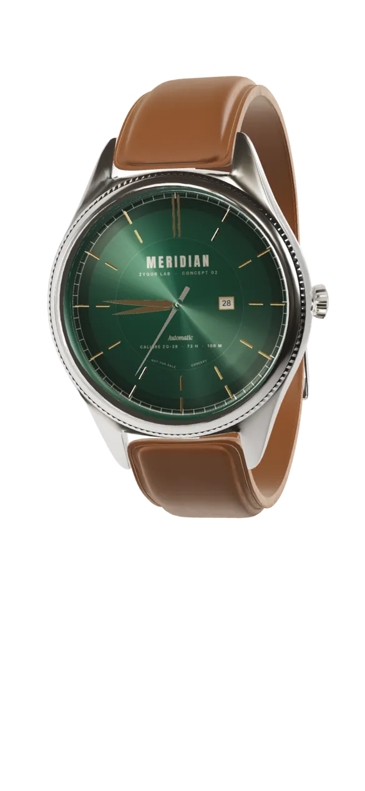

Meridian Automatic, a concept watch
The Meridian Automatic
Made to be
passed down.
A 41 mm automatic with a 72-hour reserve, a sunburst dial and a seconds hand that steps eight times a second.
Choose a dial
Calibre ZQ-28
Engineered in
quiet detail.
- CalibreZQ-28automatic, in-house concept
- Power reserve72hours
- Frequency28,800vibrations per hour
- Water resistance100metres
- Case41mm, polished steel
- CrystalSapphiredomed, anti-reflective
Up close
Every second,
accounted for.
Twelve applied indices, a hand-brushed chapter ring and a sweep that moves in eight small steps every second.
00:00:00your local time
The case
Arrives the way
it is meant to stay.
A forest felt case with a cream pillow, made to keep the watch on a shelf, in a drawer, for the next fifty years.
- Felt-lined case
- Spare strap
- Two-year concept warranty card
Time
well kept.
Private viewings by appointment. This is a concept, so nothing is booked and no watch is sold.
3D watch model: “Wrist watch” by a.aazhgirevich, CC BY 4.0, modified by Zyqor Studio (logo and dial text removed, new materials and dial print).